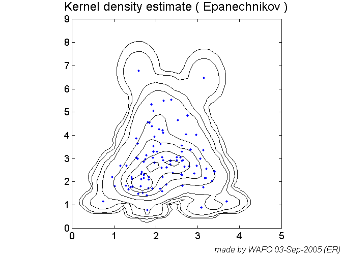
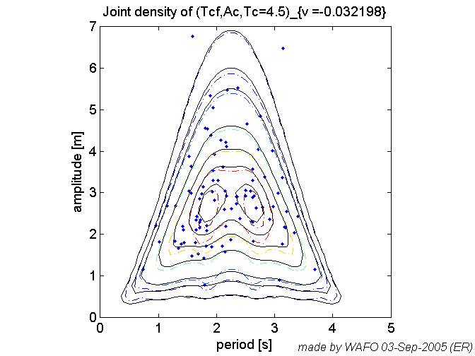
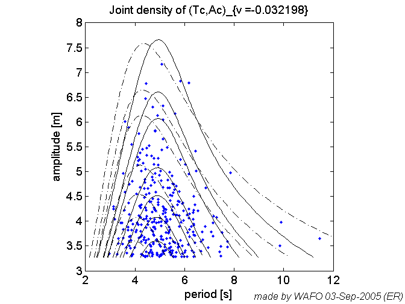
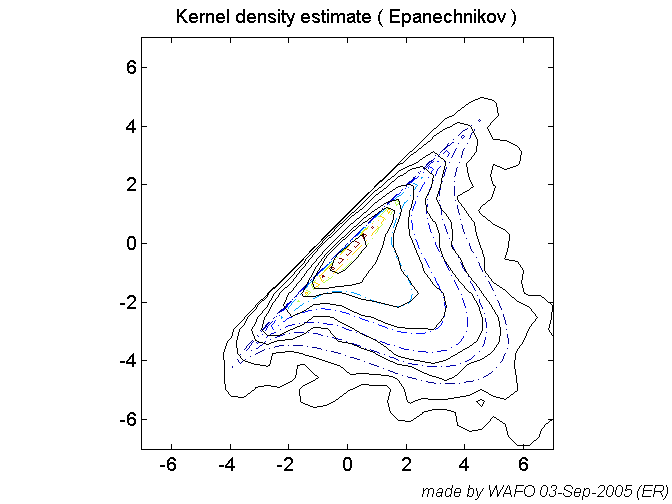
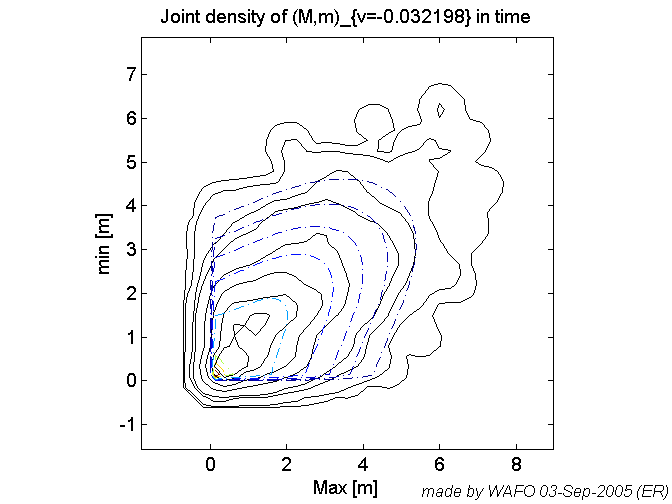

Chapter3 contains the commands used in Chapter3 in the tutorial.
Some of the commands are edited for fast computation. Each set of commands is followed by a 'pause' command.
% Tested on Matlab 5.3 % History % Revised pab sept2005 % Added sections -> easier to evaluate using cellmode evaluation. % Revised by pab Feb 2005 % -updated calls to kdetools+spec2XXpdf programs % Created by GL July 12, 2000 % from commands used in Chapter 3, written by IR %
pstate = 'off'; xx = load('sea.dat'); xx(:,2) = detrend(xx(:,2)); rate = 8; Tcrcr = dat2wa(xx,0,'c2c','tw',rate); Tc = dat2wa(xx,0,'u2d','tw',rate); disp('Block = 1'), pause(pstate)
Block = 1
clf mean(Tc) max(Tc) t = linspace(0.01,8,200); L2 = 0; kopt = kdeoptset('L2',L2); ftc1 = kde(Tc,kopt,t); pdfplot(ftc1), hold on whisto(Tc,[],[],1) axis([0 8 0 0.5]), hold off wafostamp([],'(ER)') disp('Block = 2'), pause(pstate) clf ftc2 = kdebin(Tc,kopt); disp('Block = 3'), pause(pstate)
ans =
2.0934
ans =
7.0240
Block = 2
Block = 3

clf method = 0; rate = 8; [S, H, Ac, At, Tcf, Tcb, z_ind, yn] = ... dat2steep(xx,rate,method); disp('Block = 4'), pause(pstate) clf [Smax indS]=max(S) [Amax indA]=max(Ac) spwaveplot(yn,[indA indS],'k.') wafostamp([],'(ER)') disp('Block = 5'), pause(pstate)
Block = 4
Smax =
2.5285
indS =
98
Amax =
1.9255
indA =
345
Block = 5

clf inds1 = (5965:5974)'; Nsim = 10; [y1, grec1, g2, test, tobs, mu1o, mu1oStd] = ... reconstruct(xx,inds1,Nsim); spwaveplot(y1,indA-10) hold on plot(xx(inds1,1),xx(inds1,2),'+') lamb = 2.; muLstd = tranproc(mu1o-lamb*mu1oStd,fliplr(grec1)); muUstd = tranproc(mu1o+lamb*mu1oStd,fliplr(grec1)); plot (y1(inds1,1), [muLstd muUstd],'b-') wafostamp([],'(ER)') disp('Block = 6'), pause(pstate)
First reconstruction attempt, e(g-u)=1.1682 Simulation nr: 1 of 10 e(g-g_old)=0.069937, e(g-u)=1.2157 Simulation nr: 2 of 10 e(g-g_old)=0.00025474, e(g-u)=1.216 Elapsed time is 0.851000 seconds. Block = 6

clf plot(xx(inds1,1),xx(inds1,2),'+'), hold on mu = tranproc(mu1o,fliplr(grec1)); plot(y1(inds1,1), mu) disp('Block = 7'), pause(pstate)
Block = 7

clf
L2 = 0.6;
wnormplot(Ac.^L2)
fac = kde(Ac,{'L2',L2},linspace(0.01,3,200));
pdfplot(fac)
wafostamp([],'(ER)')
simpson(fac.x{1},fac.f)
disp('Block = 8'), pause(pstate)
ans =
0.9675
Block = 8

clf
Fac = flipud(cumtrapz(fac.x{1},flipud(fac.f)));
Fac = [fac.x{1} 1-Fac];
Femp = empdistr(Ac,Fac);
axis([0 2 0 1])
wafostamp([],'(ER)')
disp('Block = 9'), pause(pstate)
Block = 9

facr = trraylpdf(fac.x{1},'Ac',grec1);
Facr = cumtrapz(facr.x{1},facr.f);
hold on
plot(facr.x{1},Facr,'.')
axis([1.25 2.25 0.95 1])
wafostamp([],'(ER)')
disp('Block = 10'), pause(pstate)
Block = 10

clf kopt2 = kdeoptset('L2',0.5,'inc',256); Tc = Tcf+Tcb; fTcAc = kdebin([Tc Ac],kopt2); fTcAc.labx={'Tc [s]' 'Ac [m]'} pdfplot(fTcAc) hold on plot(Tc,Ac,'k.') hold off wafostamp([],'(ER)') disp('Block = 11'), pause(pstate)
Warning: Numerical problems may have occured due to the power
transformation. Check the KDE for spurious spikes
fTcAc =
f: [256x256 double]
x: {2x1 cell}
labx: {'Tc [s]' 'Ac [m]'}
title: 'Binned Kernel density estimate ( Epanechnikov )'
note: 'Binned Kernel density estimate ( Epanechnikov )'
date: '03-Sep-2005 05:18:45'
options: [1x1 struct]
n: 544
cl: [8x1 double]
pl: [10 30 50 70 90 95 99 99.9000]
Block = 11

clf S = jonswap([],[5 10]); [m, mt]= spec2mom(S,4,[],0); disp('Block = 12'), pause(pstate) clf spec2bw(S) [ch Sa2] = spec2char(S,[1 3]) disp('Block = 13'), pause(pstate)
Block = 12
ans =
0.6992
ch =
5.0000 7.4933
Sa2 =
0.0553 0.0274
0.0274 0.0233
Block = 13

clf
t = linspace(0,15,100);
h = linspace(0,6,100);
flh = lh83pdf(t,h,[m(1),m(2),m(3)]);
disp('Block = 14'), pause(pstate)
Block = 14

clf
[sk, ku ]=spec2skew(S);
sa = sqrt(m(1));
gh = hermitetr([],[sa sk ku 0]);
flhg = lh83pdf(t,h,[m(1),m(2),m(3)],gh);
disp('Block = 15'), pause(pstate)
Block = 15

clf
t = linspace(0,10,100);
h = linspace(0,7,100);
fcav = cav76pdf(t,h,[m(1) m(2) m(3) m(5)],[]);
disp('Block = 16'), pause(pstate)
Block = 16

clf xx = load('sea.dat'); x = xx; x(:,2) = detrend(x(:,2)); SS = dat2spec2(x); [sk, ku, me, si ] = spec2skew(SS); gh = hermitetr([],[si sk ku me]); Hs = 4*si; r = (0:0.05:1.1*Hs)'; fac_h = trraylpdf(r,'Ac',gh); fat_h = trraylpdf(r,'At',gh); h = (0:0.05:1.7*Hs)'; facat_h = trraylpdf(h,'AcAt',gh); pdfplot(fac_h) hold on pdfplot(fat_h) hold off wafostamp([],'(ER)') disp('Block = 17'), pause(pstate)
The default L is set to 257 Block = 17

clf
TC = dat2tc(xx, me);
tc = tp2mm(TC);
Ac = tc(:,2);
At = -tc(:,1);
AcAt = Ac+At;
disp('Block = 18'), pause(pstate)
Block = 18

clf
Fac_h = [fac_h.x{1} cumtrapz(fac_h.x{1},fac_h.f)];
subplot(3,1,1)
Fac = empdistr(Ac,Fac_h);
hold on
plot(r,1-exp(-8*r.^2/Hs^2),'.')
axis([1. 2. 0.9 1])
Fat_h = [fat_h.x{1} cumtrapz(fat_h.x{1},fat_h.f)];
subplot(3,1,2)
Fat = empdistr(At,Fat_h);
hold on
plot(r,1-exp(-8*r.^2/Hs^2),'.')
axis([1. 2. 0.9 1])
Facat_h = [facat_h.x{1} cumtrapz(facat_h.x{1},facat_h.f)];
subplot(3,1,3)
Facat = empdistr(AcAt,Facat_h);
hold on
plot(r,1-exp(-2*r.^2/Hs^2),'.')
axis([1.5 3.5 0.9 1])
wafostamp([],'(ER)')
disp('Block = 19'), pause(pstate)
Block = 19

clf S1 = torsethaugen([],[6 8],1); D1 = spreading(101,'cos',pi/2,[15],[],0); D12 = spreading(101,'cos',0,[15],S1.w,1); SD1 = mkdspec(S1,D1); SD12 = mkdspec(S1,D12); disp('Block = 20'), pause(pstate)
Spectrum for Wind dominated sea Block = 20

clf f_tc = spec2tpdf(S1,[],'Tc',[0 11 56],[],4); pdfplot(f_tc) wafostamp([],'(ER)') simpson(f_tc.x{1},f_tc.f) disp('Block = 21'), pause(pstate)
The level u for Gaussian process = 0
writing data
Starting Fortran executable.
Requested parameters :
NIT = 4 integration by quadrature
EPSS = 1.000000000000000E-05 RELEPS = 1.000000000000000E-05
EPS2 = 1.000000000000000E-04 xCutOff = 4.264890793922826
NsimMax = 5000
Elapsed time is 8.562000 seconds.
ans =
1.0040
Block = 21

clf disp('NIT=5 may take time, running with NIT=2 in the following') %f_Lc = spec2tpdf2(S1,[],'Lc',[0 200 81],[],opt1); f_Lc = spec2tpdf(S1,[],'Lc',[0 200 81],[],2); % f_Lc = spec2tpdf(S1,[],'Lc',[0 200 81],[],5); pdfplot(f_Lc,'-.') wafostamp([],'(ER)') disp('Block = 22'), pause(pstate) % f_Lc_1 = spec2tpdf(S1,[],'Lc',[0 200 81],1.5,5); f_Lc_1 = spec2tpdf(S1,[],'Lc',[0 200 81],1.5,2); %f_Lc_1 = spec2tpdf(S1,[],'Lc',[0 200 81],1.5,opt1); hold on pdfplot(f_Lc_1) wafostamp([],'(ER)') disp('Block = 23'), pause(pstate)
NIT=5 may take time, running with NIT=2 in the following The level u for Gaussian process = 0 writing data Starting Fortran executable. Requested parameters : NIT = 2 integration by quadrature EPSS = 1.000000000000000E-05 RELEPS = 1.000000000000000E-05 EPS2 = 1.000000000000000E-04 xCutOff = 4.264890793922826 NsimMax = 5000 Elapsed time is 2.373000 seconds. Block = 22 The level u for Gaussian process = 0 writing data Starting Fortran executable. Requested parameters : NIT = 2 integration by quadrature EPSS = 1.000000000000000E-05 RELEPS = 1.000000000000000E-05 EPS2 = 1.000000000000000E-04 xCutOff = 4.264890793922826 NsimMax = 5000 Elapsed time is 3.045000 seconds. Block = 23

clf
simpson(f_Lc.x{1},f_Lc.f)
simpson(f_Lc_1.x{1},f_Lc_1.f)
disp('Block = 24'), pause(pstate)
ans =
1.2737
ans =
0.4631
Block = 24

clf % f_Lc_d1 = spec2tpdf(spec2spec(SD1,'rotdir',pi/2),[],... % 'Lc',[0 300 121],[],5); f_Lc_d1 = spec2tpdf(rotspec(SD1,pi/2),[],... 'Lc',[0 300 121],[],2); % f_Lc_d1 = spec2tpdf2(spec2spec(SD1,'rotdir',pi/2),[],... % 'Lc',[0 300 121],[],opt1); pdfplot(f_Lc_d1,'-.') hold on % f_Lc_d12 = spec2tpdf(SD12,[],'Lc',[0 200 81],[],5); f_Lc_d12 = spec2tpdf(SD12,[],'Lc',[0 200 81],[],2); % f_Lc_d12 = spec2tpdf2(SD12,[],'Lc',[0 200 81],[],opt1); pdfplot(f_Lc_d12) hold off wafostamp([],'(ER)') disp('Block = 25'), pause(pstate)
The level u for Gaussian process = -5.6899e-016 writing data Starting Fortran executable. Requested parameters : NIT = 2 integration by quadrature EPSS = 1.000000000000000E-05 RELEPS = 1.000000000000000E-05 EPS2 = 1.000000000000000E-04 xCutOff = 4.264890793922826 NsimMax = 5000 Elapsed time is 7.952000 seconds. The level u for Gaussian process = 0 writing data Starting Fortran executable. Requested parameters : NIT = 2 integration by quadrature EPSS = 1.000000000000000E-05 RELEPS = 1.000000000000000E-05 EPS2 = 1.000000000000000E-04 xCutOff = 4.264890793922826 NsimMax = 5000 Elapsed time is 3.144000 seconds. Block = 25

disp('Run the following example only if you want a check on computing time') disp('Edit the command file and remove %') % clf % f_Lc_d1_5 = spec2tpdf(spec2spec(SD1,'rotdir',pi/2),[],... % 'Lc',[0 300 121],[],5); % f_Lc_d1_3 = spec2tpdf(spec2spec(SD1,'rotdir',pi/2),[],... % 'Lc',[0 300 121],[],3); % f_Lc_d1_2 = spec2tpdf(spec2spec(SD1,'rotdir',pi/2),[],... % 'Lc',[0 300 121],[],2); % f_Lc_d1_0 = spec2tpdf(spec2spec(SD1,'rotdir',pi/2),[],... % 'Lc',[0 300 121],[],0); % f_Lc_d1_n4 = spec2tpdf2(spec2spec(SD1,'rotdir',pi/2),[],... % 'Lc',[0 400 161],-4); % pdfplot(f_Lc_d1_5) % hold on % pdfplot(f_Lc_d1_2) % pdfplot(f_Lc_d1_0) % pdfplot(f_Lc_d1_n4) % simpson(f_Lc_d1_n4.x{1},f_Lc_d1_n4.f) disp('Block = 26'), pause(pstate)
Run the following example only if you want a check on computing time Edit the command file and remove % Block = 26
clf xx = load('sea.dat'); x = xx; x(:,2) = detrend(x(:,2)); SS = dat2spec2(x); si = sqrt(spec2mom(SS,1)); SS.tr = dat2tr(x); Hs = 4*si method = 0; rate = 2; [S, H, Ac, At, Tcf, Tcb, z_ind, yn] = dat2steep(x,rate,method); t = linspace(0.01,8,200); ftc1 = kde(Tc,{'L2',0},t); pdfplot(ftc1) hold on % f_t = spec2tpdf(SS,[],'Tc',[0 8 81],0,4); f_t = spec2tpdf(SS,[],'Tc',[0 8 81],0,2); simpson(f_t.x{1},f_t.f) pdfplot(f_t,'-.') hold off wafostamp([],'(ER)') disp('Block = 27'), pause(pstate)
The default L is set to 257
Hs =
1.8901
The level u for Gaussian process = 6.7181e-006
writing data
Starting Fortran executable.
Requested parameters :
NIT = 2 integration by quadrature
EPSS = 1.000000000000000E-05 RELEPS = 1.000000000000000E-05
EPS2 = 1.000000000000000E-04 xCutOff = 4.264890793922826
NsimMax = 5000
Elapsed time is 2.063000 seconds.
ans =
1.0648
Block = 27

clf % f_t2 = spec2tpdf(SS,[],'Tc',[0 8 81],[Hs/2],4); f_t2 = spec2tpdf(SS,[],'Tc',[0 8 81],[Hs/2],2); Pemp = sum(Ac>Hs/2)/sum(Ac>0) simpson(f_t2.x{1},f_t2.f) index = find(Ac>Hs/2); ftc1 = kde(Tc(index),{'L2',0},t); ftc1.f = Pemp*ftc1.f; pdfplot(ftc1) hold on pdfplot(f_t2,'-.') hold off wafostamp([],'(ER)') disp('Block = 28'), pause(pstate) % clf % f_tcc2 = spec2tccpdf(SS,[],'t>',[0 12 61],[Hs/2],[0],-1); % simpson(f_tcc2.x{1},f_tcc2.f) % f_tcc3 = spec2tccpdf(SS,[],'t>',[0 12 61],[Hs/2],[0],3,5); % f_tcc3 = spec2tccpdf(SS,[],'t>',[0 12 61],[Hs/2],[0],1,5); % simpson(f_tcc3.x{1},f_tcc3.f) % pdfplot(f_tcc2,'-.') % hold on % pdfplot(f_tcc3) % hold off disp('Block = 29'), pause(pstate)
The level u for Gaussian process = 6.7181e-006
writing data
Starting Fortran executable.
Requested parameters :
NIT = 2 integration by quadrature
EPSS = 1.000000000000000E-05 RELEPS = 1.000000000000000E-05
EPS2 = 1.000000000000000E-04 xCutOff = 4.264890793922826
NsimMax = 5000
Elapsed time is 3.755000 seconds.
Pemp =
0.1778
ans =
0.1580
Block = 28
Block = 29

clf [TC tc_ind v_ind] = dat2tc(yn,[],'dw'); N = length(tc_ind); t_ind = tc_ind(1:2:N); c_ind = tc_ind(2:2:N); Pemp = sum(yn(t_ind,2)<-Hs/2 & yn(c_ind,2)>Hs/2)/length(t_ind) ind = find(yn(t_ind,2)<-Hs/2 & yn(c_ind,2)>Hs/2); spwaveplot(yn,ind(2:4)) wafostamp([],'(ER)') disp('Block = 30'), pause(pstate)
The level v is set to: 4.3359e-005
Pemp =
0.0370
Block = 30

clf
Tcc = yn(v_ind(1+2*ind),1)-yn(v_ind(1+2*(ind-1)),1);
t = linspace(0.01,14,200);
L2 = 0;
ftcc1 = kde(Tcc,{'kernel' 'epan','L2',L2},t);
ftcc1.f = Pemp*ftcc1.f;
pdfplot(ftcc1,'-.')
wafostamp([],'(ER)')
disp('Block = 31'), pause(pstate)
disp('The rest of this chapter deals with joint densities.')
disp('Some calculations may take some time.')
disp('You could experiment with other NIT.')
%return
Block = 31 The rest of this chapter deals with joint densities. Some calculations may take some time. You could experiment with other NIT.

clf f_tcc22_1 = spec2tccpdf(SS,[],'t>',[0 12 61],[Hs/2],[Hs/2],-1); simpson(f_tcc22_1.x{1},f_tcc22_1.f) hold on pdfplot(f_tcc22_1) hold off wafostamp([],'(ER)') disp('Block = 32'), pause(pstate)
The level u for Gaussian process = 6.7181e-006
ans =
0
writing data
Starting Fortran executable.
Requested parameters :
SCIS = 1 SADAPT if NDIM<9 otherwise by KRBVRC
EPSS = 1.000000000000000E-03 RELEPS = 1.000000000000000E-05
EPS2 = 1.000000000000000E-04 xCutOff = 4.764890793922826
NsimMax = 6000
Ready: 1 of 61
Ready: 2 of 61
Ready: 3 of 61
Ready: 4 of 61
Ready: 5 of 61
Ready: 6 of 61
Ready: 7 of 61
Ready: 8 of 61
Ready: 9 of 61
Ready: 10 of 61
Ready: 11 of 61
Ready: 12 of 61
Ready: 13 of 61
Ready: 14 of 61
Ready: 15 of 61
Ready: 16 of 61
Ready: 17 of 61
Ready: 18 of 61
Ready: 19 of 61
Ready: 20 of 61
Ready: 21 of 61
Ready: 22 of 61
Ready: 23 of 61
Ready: 24 of 61
Ready: 25 of 61
Ready: 26 of 61
Ready: 27 of 61
Ready: 28 of 61
Ready: 29 of 61
Ready: 30 of 61
Ready: 31 of 61
Ready: 32 of 61
Ready: 33 of 61
Ready: 34 of 61
Ready: 35 of 61
Ready: 36 of 61
Ready: 37 of 61
Ready: 38 of 61
Ready: 39 of 61
Ready: 40 of 61
Ready: 41 of 61
Ready: 42 of 61
Ready: 43 of 61
Ready: 44 of 61
Ready: 45 of 61
Ready: 46 of 61
Ready: 47 of 61
Ready: 48 of 61
Ready: 49 of 61
Ready: 50 of 61
Ready: 51 of 61
Ready: 52 of 61
Ready: 53 of 61
Cndsrt4,Error Covariance negative definit
Ready: 54 of 61
Ready: 55 of 61
Cndsrt4,Error Covariance negative definit
Cndsrt4,Error Covariance negative definit
Cndsrt4,Error Covariance negative definit
Ready: 56 of 61
Ready: 57 of 61
Ready: 58 of 61
Ready: 59 of 61
Cndsrt4,Error Covariance negative definit
Cndsrt4,Error Covariance negative definit
Cndsrt4,Error Covariance negative definit
Cndsrt4,Error Covariance negative definit
Ready: 60 of 61
Cndsrt4,Error Covariance negative definit
Cndsrt4,Error Covariance negative definit
Ready: 61 of 61
f =
f: [1x61 double]
x: {[61x1 double]}
labx: {'T [s]'}
title: 'Density of Tcc with Ac>0.94507 and At>0.94507'
note: []
date: '03-Sep-2005 05:30:18'
nit: -1
speed: 4
SCIS: 1
u: -0.0168
elapsedTime: 649.2030
ans =
0.0360
Block = 32

clf yy = load('gfaksr89.dat'); SS = dat2spec(yy); si = sqrt(spec2mom(SS,1)); SS.tr = dat2tr(yy); Hs = 4*si v = gaus2dat([0 0],SS.tr); v = v(2) disp('Block = 33'), pause(pstate)
The default L is set to 305
Hs =
6.5567
v =
-0.0322
Block = 33

clf [TC, tc_ind, v_ind] = dat2tc(yy,v,'dw'); N = length(tc_ind); t_ind = tc_ind(1:2:N); c_ind = tc_ind(2:2:N); v_ind_d = v_ind(1:2:N+1); v_ind_u = v_ind(2:2:N+1); T_d = ecross(yy(:,1),yy(:,2),v_ind_d,v); T_u = ecross(yy(:,1),yy(:,2),v_ind_u,v); % Old call %T_d = yy(v_ind_d,1)- yy(v_ind_d,2)* ... % (yy(2,1)-yy(1,1))./(yy(v_ind_d+1,2)-yy(v_ind_d,2)); %T_u = yy(v_ind_u,1)- yy(v_ind_u,2)* ... % (yy(2,1)-yy(1,1))./(yy(v_ind_u+1,2)-yy(v_ind_u,2)); Tc = T_d(2:end)-T_u(1:end); Tt = T_u(1:end)-T_d(1:end-1); Tcf = yy(c_ind,1)-T_u; Ac = yy(c_ind,2)-v; At = v-yy(t_ind,2); disp('Block = 34'), pause(pstate)
Block = 34
clf t = linspace(0.01,15,200); kopt3 = kdeoptset('hs',0.25,'L2',0); ftc1 = kde(Tc,kopt3,t); ftt1 = kde(Tt,kopt3,t); pdfplot(ftt1,'k') hold on pdfplot(ftc1,'k-.') f_tc4 = spec2tpdf(SS,[],'Tc',[0 12 81],0,4,5); f_tc2 = spec2tpdf(SS,[],'Tc',[0 12 81],0,2,5); f_tc = spec2tpdf(SS,[],'Tc',[0 12 81],0,-1); pdfplot(f_tc,'b') hold off wafostamp([],'(ER)') disp('Block = 35'), pause(pstate)
The level u for Gaussian process = 4.8387e-006 writing data Starting Fortran executable. Requested parameters : NIT = 4 integration by quadrature EPSS = 1.000000000000000E-05 RELEPS = 1.000000000000000E-05 EPS2 = 1.000000000000000E-04 xCutOff = 4.264890793922826 NsimMax = 5000 Elapsed time is 28.080000 seconds. The level u for Gaussian process = 4.8387e-006 writing data Starting Fortran executable. Requested parameters : NIT = 2 integration by quadrature EPSS = 1.000000000000000E-05 RELEPS = 1.000000000000000E-05 EPS2 = 1.000000000000000E-04 xCutOff = 4.264890793922826 NsimMax = 5000 Elapsed time is 1.773000 seconds. The level u for Gaussian process = 4.8387e-006 writing data Starting Fortran executable. Requested parameters : SCIS = 1 SADAPT if NDIM<9 otherwise by KRBVRC EPSS = 1.000000000000000E-03 RELEPS = 1.000000000000000E-05 EPS2 = 1.000000000000000E-04 xCutOff = 4.764890793922826 NsimMax = 5000 Elapsed time is 21.701000 seconds. Block = 35

clf
ind = find(4.4<Tc & Tc<4.6);
f_AcTcf = kde([Tcf(ind) Ac(ind)],{'L2',[1 .5]});
plot(Tcf(ind), Ac(ind),'.');
hold on
pdfplot(f_AcTcf)
wafostamp([],'(ER)')
disp('Block = 36'), pause(pstate)
Block = 36
clf %opt1 = rindoptset('speed',5,'method',3); %opt2 = rindoptset('speed',5,'nit',2,'method',0); opt1 = rindoptset('speed',9,'method',3); opt2 = rindoptset('speed',7,'nit',2,'method',0); f_tcfac1 = spec2thpdf(SS,[],'TcfAc',[4.5 4.5 46],[0:0.25:8],opt1); f_tcfac2=spec2thpdf(SS,[],'TcfAc',[4.5 4.5 46],[0:0.25:8],opt2); plot(Tcf(ind), Ac(ind),'.'); hold on pdfplot(f_tcfac1,'-.') pdfplot(f_tcfac2) simpson(f_tcfac1.x{1},simpson(f_tcfac1.x{2},f_tcfac1.f,1)) simpson(f_tcfac2.x{1},simpson(f_tcfac2.x{2},f_tcfac2.f,1)) f_tcf4=spec2tpdf(SS,[],'Tc',[4.5 4.5 46],[0:0.25:8],6); f_tcf4.f(46) wafostamp([],'(ER)') disp('Block = 37'), pause(pstate)
The level u for Gaussian process = 4.8387e-006
The level u for Gaussian process = 4.8387e-006
ans =
0.2439
ans =
0.2266
The level u for Gaussian process = 4.8387e-006
writing data
Starting Fortran executable.
Requested parameters :
NIT = 6 integration by quadrature
EPSS = 1.000000000000000E-05 RELEPS = 1.000000000000000E-05
EPS2 = 1.000000000000000E-04 xCutOff = 4.264890793922826
NsimMax = 5000
Ready: 46 of 46
Elapsed time is 1.772000 seconds.
ans =
0.2196
Block = 37
 clf f_tcac_s = spec2thpdf(SS,[],'TcAc',[0 12 81],[Hs/2:0.1:2*Hs],opt1); disp('Block = 38'), pause(pstate) clf mom = spec2mom(SS,4,[],0); t = f_tcac_s.x{1}; h = f_tcac_s.x{2}; flh_g = lh83pdf(t',h',[mom(1),mom(2),mom(3)],SS.tr); clf ind=find(Ac>Hs/2); plot(Tc(ind), Ac(ind),'.'); hold on pdfplot(flh_g,'k-.') pdfplot(f_tcac_s) wafostamp([],'(ER)') disp('Block = 39'), pause(pstate)
The level u for Gaussian process = 4.8387e-006 Block = 38 Block = 39
clf % f_tcac = spec2thpdf(SS,[],'TcAc',[0 12 81],[0:0.2:8],opt1); % pdfplot(f_tcac) disp('Block = 40'), pause(pstate)
Block = 40
clf tp = dat2tp(yy); Mm = fliplr(tp2mm(tp)); fmm = kde(Mm); f_mM = spec2mmtpdf(SS,[],'mm',[],[-7 7 51],opt2); clf pdfplot(f_mM,'-.') hold on pdfplot(fmm,'k-') hold off wafostamp([],'(ER)') disp('Block = 41'), pause(pstate)
The level u for Gaussian process = 4.8387e-006 Block = 41
clf ind = find(Mm(:,1)>v & Mm(:,2)<v); Mmv = abs(Mm(ind,:)-v); fmmv = kde(Mmv); f_vmm = spec2mmtpdf(SS,[],'vmm',[],[-7 7 51],opt2); clf pdfplot(fmmv,'k-') hold on pdfplot(f_vmm,'-.') hold off wafostamp([],'(ER)') disp('Block = 42'), pause(pstate)
The level u for Gaussian process = 4.8387e-006 Block = 42
clf facat = kde([Ac At]); f_acat = spec2mmtpdf(SS,[],'AcAt',[],[-7 7 51],opt2); clf pdfplot(f_acat,'-.') hold on pdfplot(facat,'k-') hold off wafostamp([],'(ER)') disp('Block = 43'), pause(pstate)
Error: File: c:\pab\matlab\wafo\trgauss\private\mctp2tc.m Line: 26 Column: 4 A BREAK statement appeared outside of a loop. Use RETURN instead.